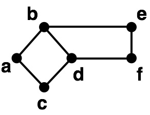

February 2019
2019 Umut A. Acar and Guy E. Blelloch
All rights reserved. This book or any portion thereof may not be reproduced or used in any manner whatsoever without the express written permission of the copyright holders (authors) except for the use of brief quotations in a book review.
Umut A. Acar
Carnegie Mellon University
Department of Computer Science GHC 9231
Pittsburgh PA 15213 USA
Guy E. Blelloch
Carnegie Mellon University
Department of Computer Science GHC 9211
Pittsburgh PA 15213 USA
This chapter introduces the basics of discrete probability theory.
Probability theory is a mathematical study of uncertain situations such as a dice game. In probability theory, we model a situation with an uncertain as an and reason carefully about the likelihood of various outcomes in precise mathematical terms.
Suppose we have two fair dice, meaning that each is equally likely to land on any of its six sides. If we toss the dice, what is the chance that their numbers sum to \(4\)? To determine the probability we first notice that there are a total of \(6 \times 6 = 36\) distinct outcomes. Of these, only three outcomes sum to 4 (1 and 3, 2 and 2, and 3 and 1). The probability of the event that the number sum up to \(4\) is therefore \[\frac {\text{\# of outcomes that sum to}~4} {\text{\# of total possible outcomes}} = \frac{3}{36} = \frac{1}{12}\]
A \(\Omega{}\) is an arbitrary and possibly infinite (but countable) set of possible outcomes of a probabilistic experiment. Any experiment will return exactly one outcome from the set. For the dice game, the sample space is the 36 possible outcomes of the dice, and an experiment (roll of the dice) will return one of them. An is any subset of \(\Omega\), and most often representing some property common to multiple outcomes. For example, an event could correspond to outcomes in which the dice add to \(4\)—this subset would be of size \(3\). We typically denote events by capital letters from the start of the alphabet, e.g. \(A\), \(B\), \(C\). We often refer to the individual elements of \(\Omega{}\) as . We assign a probability to each event. Our model for probability is defined as follows.
[def:probability::theory::probability-space]
A probability space consists of a \(\Omega{}\) representing the set of possible outcomes, and a , which is a function \(\mathbf{P}\) from all subsets of \(\Omega{}\) (the ) to a probability (real number). These must satisfy the following axioms.
Nonnegativity: \(\mathbf{P}\left[{A}\right] \in [0,1]\).
Additivity: for any two disjoint events \(A\) and \(B\) (i.e., \(A \cap B = \emptyset\)), \[\mathbf{P}\left[{A \cup B}\right] = \mathbf{P}\left[{A}\right] + \mathbf{P}\left[{B}\right]~.\]
Normalization: \(\mathbf{P}\left[{\Omega}\right] = 1\).
Probability spaces can have countably infinite outcomes. The additivity rule generalizes to infinite sums, e.g., the probability of the event consisting of the union of infinitely many number of disjoint events is the infinite sum of the probability of each event.
When defining the probability space, we have not specified carefully the exact nature of events, because they may differ based on the experiment and what we are interested in. We do, however, need to take care when setting up the probabilistic model so that we can reason about the experiment correctly. For example, each outcome of the sample space must correspond to one unique actual outcome of the experiment. In other words, they must be mutually exclusive. Similarly, any actual outcome of the experiment must have a corresponding representation in the sample space.
[ex:probability::theory::dice]
For our example of throwing two dice, the sample space consists of all of the \(36\) possible pairs of values of the dice: \[\Omega= \{(1,1),(1,2),\ldots,(2,1),\ldots,(6,6)\}.\] Each pair in the sample space corresponds to an outcome of the experiment. The outcomes are mutually exclusive and cover all possible outcomes of the experiment.
For example, having the first dice show up \(1\) and the second \(4\) is an outcome and corresponds to the element \((1,4)\) of the sample space \(\Omega\).
The event that the “the first dice is 3” corresponds to the set \[\begin{array}{lcl} A & = & \left\{ (d_1,d_2) \in \Omega \;|\; d_1 = 3 \right\} \\ & = & \{(3,1),(3,2),(3,3),(3,4),(3,5),(3,6)\}~. \end{array}\] The event that “the dice sum to 4” corresponds to the set \[\begin{array}{lcl} B & = & \left\{ (d_1,d_2) \in \Omega \;|\; d_1 + d_2 = 4 \right\}\\ & = & \{(1,3),(2,2),(3,1)\}~. \end{array}\]
Assuming the dice are unbiased, the probability measure is defined by all elementary events having equal probability, i.e., \[\forall x \in \Omega,~~~\mathbf{P}\left[\{x\}\right] = \frac{1}{36}.\]
The probability of the event \(A\) (that the first dice is 3) is thus \[\mathbf{P}\left[{A}\right] = \sum_{x \in A} \mathbf{P}\left[\{x\}\right] = \frac{6}{36} = \frac{1}{6}.\]
If the dice were biased so the probability of a given value is proportional to that value, then the probability measure would be \(\mathbf{P}\left[\{(x,y)\}\right] = \frac{x}{21} \times \frac{y}{21}\), and the probability of the event \(B\) (that the dice add to 4) would be \[\mathbf{P}\left[{B}\right] = \sum_{x \in B} \mathbf{P}\left[\{x\}\right] = \frac{1 \times 3 + 2 \times 2 + 3 \times 1}{21 \times 21} = \frac{10}{441}.\]
Given a probability space, we can prove several properties of probability measures by using the three axioms that they must satisfy. For example, if for two events \(A\) and \(B\). We have
if \(A \subseteq B\), then \(\mathbf{P}\left[{A}\right] \le \mathbf{P}\left[{B}\right]\),
\(\mathbf{P}\left[{A \cup B}\right] = \mathbf{P}\left[{A}\right] + \mathbf{P}\left[{B}\right] - \mathbf{P}\left[{A \cap B}\right]\).
The union bound, also known as Boole’s inequality, is a simple way to obtain an upper bound on the probability of any of a collection of events happening. Specifically for a collection of events \(A_0, A_2, \ldots, A_{n-1}\) the bound is: \[\mathbf{P}\left[{\bigcup_{0 \leq i < n} A_i}\right] \leq \sum_{i=0}^{n-1} \mathbf{P}\left[{A_i}\right]\] This bound is true unconditionally. To see why the bound holds we note that the elementary events in the union on the left are all included in the sum on the right (since the union comes from the same set of events). In fact they might be included multiple times in the sum on the right, hence the inequality. In fact the sum on the right could add to more than one, in which case the bound is not useful. The union bound can be useful in generating high-probability bounds for algorithms. For example, when the probability of each of \(n\) events is very low, e.g. \(1/n^5\) and the sum remains very low, e.g. \(1/n^4\).
Conditional probability allows us to reason about dependencies between observations. For example, suppose that your friend rolled a pair of dice and told you that they sum up to \(6\), what is the probability that one of dice has come up \(1\)? Conditional probability has many practical applications. For example, given that a medical test for a disease comes up positive, we might want to know the probability that the patient has the disease. Or, given that your computer has been working fine for the past 2 years, you might want to know the probability that it will continue working for one more year.
For a given probability space, we define the of an event \(A\) given \(B\), as the probability of \(A\) occurring given that \(B\) occurs as \[\mathbf{P}\left[{A {\:\mid\:}B}\right] = \frac{\mathbf{P}\left[{A \cap B}\right]}{\mathbf{P}\left[{B}\right]}.\]
The conditional probability measures the probability that the event \(A\) occurs given that \(B\) does. It is defined only when \(\mathbf{P}\left[{B}\right] > 0\).
Conditional probability satisfies the three axioms of probability measures and thus itself a probability measure. We can thus treat conditional probabilities just as ordinary probabilities. Intuitively, conditional probability can be thought as a focusing and re-normalization of the probabilities on the assumed event \(B\).
Consider throwing two fair dice and calculate the probability that the first dice comes us \(1\) given that the sum of the two dice is \(4\). Let \(A\) be the event that the first dice comes up \(1\) and \(B\) the event that the sum is \(4\). We can write \(A\) and \(B\) in terms of outcomes as \[\begin{array}{lll} A & = & \{ (1,1), (1,2), (1,3), (1,4), (1,5), (1,6) \}~\mbox{and} \\ B & = & \{ (1,3), (2,2), (3,1) \}. \end{array}\] We thus have \(A \cap B = \{ (1,3) \}\). Since each outcome is equally likely, \[\mathbf{P}\left[{A {\:\mid\:}B}\right] = \frac{\mathbf{P}\left[{A \cap B}\right]}{\mathbf{P}\left[{B}\right]} % = % \frac{|A \cap B|}{|B|} = \frac{1}{3}.\]
Conditional probabilities can be useful in estimating the probability of an event that may depend on a selection of choices. The total probability theorem can be handy in such circumstances.
Consider a probabilistic space with sample space \(\Omega\) and let \(A_0, \ldots, A_{n-1}\) be a partition of \(\Omega\) such that \(\mathbf{P}\left[{A_i}\right] > 0\) for all \(0 \le i < n\). For any event \(B\) the following holds: \[\begin{array}{lll} \mathbf{P}\left[{B}\right] & = & \displaystyle\sum_{i=0}^{n-1} \mathbf{P}\left[{B \cap A_i}\right] \\ & = & \displaystyle\sum_{i=0}^{n-1} \mathbf{P}\left[{A_i}\right]\mathbf{P}\left[{B {\:\mid\:}A_i}\right] \end{array}\]
Your favorite social network partitions your connections into two kinds, near and far. The social network has calculated that the probability that you react to a post by one of your far connections is \(0.1\) but the same probability is \(0.8\) for a post by one of your near connections. Suppose that the social network shows you a post by a near and far connection with probability \(0.6\) and \(0.4\) respectively.
Let’s calculate the probability that you react to a post that you see on the network. Let \(A_0\) and \(A_1\) be the event that the post is near and far respectively. We have \(\mathbf{P}\left[{A_0}\right] = 0.6\) and \(\mathbf{P}\left[{A_1}\right] = 0.4\). Let \(B\) the event that you react, we know that \(\mathbf{P}\left[{B {\:\mid\:}A_0}\right] = 0.8\) and \(\mathbf{P}\left[{B {\:\mid\:}A_1}\right] = 0.1\).
We want to calculate \(\mathbf{P}\left[{B}\right]\), which by total probability theorem we know to be \[\begin{array}{lll} \mathbf{P}\left[{B}\right] & = & \mathbf{P}\left[{B \cap A_0}\right] + \mathbf{P}\left[{B \cap A_1}\right] \\ & = & \mathbf{P}\left[{A_0}\right]\mathbf{P}\left[{B {\:\mid\:}A_0}\right] + \mathbf{P}\left[{A_1}\right]\mathbf{P}\left[{B {\:\mid\:}A_1}\right]. \\ & = & 0.6 \cdot 0.8 + 0.4 \cdot 0.1 \\ & = & 0.52. \end{array}\]
It is sometimes important to reason about the dependency relationship between events. Intuitively we say that two events are independent if the occurrence of one does not affect the probability of the other. More precisely, we define independence as follows.
Two events \(A\) and \(B\) are if \[\mathbf{P}\left[{A \cap B}\right] = \mathbf{P}\left[{A}\right] \cdot \mathbf{P}\left[{B}\right].\] We say that multiple events \(A_0, \dots, A_{n-1}\) are if and only if, for any non-empty subset \(I \subseteq \{0, \dots, n-1\}\), \[\mathbf{P}\left[{\bigcap_{i \in I} A_i}\right] = \prod_{i\in I} \mathbf{P}\left[{A_i}\right].\]
Recall that \(\mathbf{P}\left[{A {\:\mid\:}B}\right] = \frac{\mathbf{P}\left[{A \cap B}\right]}{\mathbf{P}\left[{B}\right]}\) when \(\mathbf{P}\left[{B}\right] > 0\). Thus if \(\mathbf{P}\left[{A {\:\mid\:}B}\right] = \mathbf{P}\left[{A}\right]\) then \(\mathbf{P}\left[{A \cap B}\right] = \mathbf{P}\left[{A}\right] \cdot \mathbf{P}\left[{B}\right]\). We can thus define independence in terms of conditional probability but this works only when \(\mathbf{P}\left[{B}\right] > 0\).
For two dice, the events \(A = \left\{ (d_1,d_2) \in \Omega \;|\; d_1=1 \right\}\) (the first dice is 1) and \(B = \left\{ (d_1,d_2) \in \Omega \;|\; d_2=1 \right\}\) (the second dice is 1) are independent since \[\begin{array}{llccl}\ & \mathbf{P}\left[{A}\right] \times \mathbf{P}\left[{B}\right] & = & \frac{1}{6} \times \frac{1}{6} & = \frac{1}{36} \\[4mm] = & \mathbf{P}\left[{A \cap B}\right] & = & \mathbf{P}\left[{\left\{ (1,1) \right\}}\right] & = \frac{1}{36}~. \end{array}\] However, the event \(C \equiv \{X =4\}\) (the dice add to 4) is not independent of \(A\) since \[\begin{array}{llccl} & \mathbf{P}\left[{A}\right] \times \mathbf{P}\left[{C}\right] & = &\frac{1}{6} \times \frac{3}{36} & = \frac{1}{72} \\[4mm] \neq & \mathbf{P}\left[{A \cap C}\right] & = & \mathbf{P}\left[{\left\{ (1,3) \right\}}\right] & = \frac{1}{36}~. \end{array}\] \(A\) and \(C\) are not independent since the fact that the first dice is 1 increases the probability they sum to \(4\) (from \(\frac{1}{12}\) to \(\frac{1}{6}\)).
For two dice, let \(A\) be the event that first roll is \(1\) and \(B\) be the event that the sum of the rolls is \(5\). Are \(A\) and \(B\) independent? Prove or disprove.
Consider now the same question but this time define \(B\) to be the event that the sum of the rolls is \(7\).
This chapter introduces the random variables and their use in probability theory.
[def:probability::rv] A \(X\) is a real-valued function on the outcomes of an experiment, i.e., \(X : \Omega\to \mathbb{R}\), i.e., it assigns a real number to each outcome. For a given probability space there can be many random variables, each keeping track of different quantities. We typically denote random variables by capital letters from the end of the alphabet, e.g. \(X\), \(Y\), and \(Z\). We say that a random variable is if its range is finite or countable infinite. Throughout this book, we only consider discrete random variables.
For throwing two dice, we can define random variable as the sum of the two dice \[X(d_1,d_2) = d_1+d_2~,\] the product of two dice \[Y(d_1,d_2) = d_1 \times d_2~,\] or the value of the first dice the two dice: \[Z(d_1,d_2) = d_1~.\]
A random variable is called an if it takes on the value \(1\) when some condition is true and \(0\) otherwise.
For throwing two dice, we can define indicator random variable as getting doubles \[Y(d_1,d_2) = \left\{ \begin{array}{ll} 1 & \mbox{if}~d_1 = d_2 \\ 0 & \mbox{if}~d_1 \not= d_2 ~. \end{array} \right.\] Using our shorthand, the event \(\{X =4\}\) corresponds to the event “the dice sum to 4”.
For a random variable \(X\) and a value \(x \in \mathbb{R}\), we use the following shorthand for the event corresponding to \(X\) equaling \(x\): \[\{X =x\} \equiv \left\{ y \in \Omega \;|\; X(y) = x \right\}~,\] and when applying the probability measure we use the further shorthand \[\mathbf{P}\left[{X = x}\right] \equiv \mathbf{P}\left[{\{X =x\}}\right]~.\]
For throwing two dice, and \(X\) being a random variable representing the sum of the two dice, \(\{X =4\}\) corresponds to the event “the dice sum to 4”, i.e. the set \[\{y \in \Omega~|~X(y) = 4\} = \{(1,3),(2,2),(3,1)\}~.\]
Assuming unbiased coins, we have that \[\mathbf{P}\left[{X = 4}\right] = 1/12~.\]
The term random variable might seem counter-intuitive since it is actually a function not a variable, and it is not really random since it is a well defined deterministic function on the sample space. However if you think of it in conjunction with the random experiment that selects a elementary event, then it is a variable that takes on its value based on a random process.
For a discrete random variable \(X\), we define its or , written \(\mathbf{P}_{X}(\cdot)\), for short as a function mapping each element \(x\) in the range of the random variable to the probability of the event \(\{X =x\}\), i.e., \[\mathbf{P}_{X}(x) = \mathbf{P}\left[{X = x}\right].\]
The probability mass function for the indicator random variable \(X\) indicating whether the outcome of a roll of dice is comes up even is \[\begin{array}{lll} \mathbf{P}_{X}(0) = \mathbf{P}\left[{\{X =0\}}\right] = \mathbf{P}\left[{\{1, 3, 5\}}\right] = 1/2,~\mbox{and} \\ \mathbf{P}_{X}(1) = \mathbf{P}\left[{\{X =1\}}\right] = \mathbf{P}\left[{\{2, 4, 6\}}\right] = 1/2. \end{array}\]
The probability mass function for the random variable \(X\) that maps each outcome in a roll of dice to the smallest Mersenne prime number no less than the outcome is \[\begin{array}{lll} \mathbf{P}_{X}(3) = \mathbf{P}\left[{\{X =3\}}\right] = \mathbf{P}\left[{\{1, 2, 3\}}\right] = 1/2,~\mbox{and} \\ \mathbf{P}_{X}(7) = \mathbf{P}\left[{\{X =7\}}\right] = \mathbf{P}\left[{\{4, 5, 6\}}\right] = 1/2. \end{array}\]
Note that much like a probability measure, a probability mass function is a non-negative function. It is also additive in a similar sense: for any distinct \(x\) and \(x'\), the events \(\{X =x\}\) and \(\{X =x'\}\) are disjoint. Thus for any set \(\bar{x}\) of values of \(X\), we have \[\mathbf{P}\left[{X \in \bar{x}}\right] = \sum_{x \in \bar{x}}{\mathbf{P}_{X}(x)}.\] Furthermore, since \(X\) is a function on the sample space, the events corresponding to the different values of \(X\) partition the sample space, and we have \[\sum_{x}{\mathbf{P}_{X}(x)} = 1.\] These are the important properties of probability mass functions: they are non-negative, normalizing, and are additive in a certain sense.
We can also compute the probability mass function for multiple random variables defined for the same probability space. For example, the for two random variables \(X\) and \(Y\), written \(\mathbf{P}_{X,Y}(x,y)\) denotes the probability of the event \(\{X =x\} \cap \{Y =y\}\), i.e., \[\mathbf{P}_{X,Y}(x,y) = \mathbf{P}\left[{\{X =x\} \cap \{Y =y\}}\right] = \mathbf{P}\left[{X = x, Y = y}\right].\] Here \(\mathbf{P}\left[{X = x, Y = y}\right]\) is shorthand for \(\mathbf{P}\left[{\{X =x\} \cap \{Y =y\}}\right]\).
In our analysis or randomized algorithms, we shall repeatedly encounter a number of well-known random variables and create new ones from existing ones by composition.
Suppose that we toss a coin that comes up a head with probability \(p\) and a tail with probability \(1-p\). The takes the value \(1\) if the coin comes up heads and \(0\) if it comes up tails. In other words, it is an indicator random variable indicating heads. Its probability mass function is \[\mathbf{P}_{X}(x) = \left\{ \begin{array}{ll} p & \mbox{if}~x = 1 \\ 1-p & \mbox{if}~x = 0. \end{array} \right.\]
Consider \(n\) Bernoulli trials with probability \(p\). We call the random variable \(X\) denoting the number of heads in the \(n\) trials as the . Its probability mass function for any \(0 \le x \le n\) is \[\mathbf{P}_{X}(x) = {n \choose x}\,p^x\,(1-p)^{n-x}.\]
Consider performing Bernoulli trials with probability \(p\) until the coin comes up heads and \(X\) denote the number of trials needed to observe the first head. The random variable \(X\) is called the . Its probability mass function for any \(0 \le x\) is \[\mathbf{P}_{X}(x) = (1-p)^{x-1} p.\]
It is often useful to “apply” a function to one or more random variables to generate a new random variable. Specifically if we a function \(f : \mathbb{R} \rightarrow \mathbb{R}\) and a random variable \(X\) we can compose the two giving a new random variable: \[Y(x) = f(X(x))\] We often write this shorthand as \(Y = f(X)\). Similarly for two random variables \(X\) and \(Y\) we write \(Z = X + Y\) as shorthand for \[Z(x) = X(x) + Y(x)\] or equivalently \[Z = \lambda x . (X(x) + Y(x))\]
The probability mass function for the new variable can be computed by “massing” the probabilities for each value. For example, for a function of a random variable \(Y = f(X)\), we can write the probability mass function as \[\mathbf{P}_{Y}(y) = \mathbf{P}\left[{Y = y}\right] = \sum_{x ~\mid~f(x) = y}{\mathbf{P}_{X}(x)}~.\]
Let \(X\) be a Bernoulli random variable with parameter \(p\). We can define a new random variable \(Y\) as a transformation of \(X\) by a function \(f(\cdot)\). For example, \(Y = f(X) = 9X + 3\) is random variable that transforms \(X\), e.g., \(X = 1\) would be transformed to \(Y = 12\). The probability mass function for \(Y\) reflects that of \(X\), Its probability mass function is \[\mathbf{P}_{Y}(y) = \left\{ \begin{array}{ll} p & \mbox{if}~y = 12 \\ 1-p & \mbox{if}~y = 3. \end{array} \right.\]
Consider the random variable \(X\) with the probability mass function \[\mathbf{P}_{X}(x) = \left\{ \begin{array}{lll} 0.25 & \mbox{if} & x = -2 \\ 0.25 & \mbox{if} & x = -1 \\ 0.25 & \mbox{if} & x = 0 \\ 0.25 & \mbox{if} & x = 1 \end{array} \right.\]
We can calculate the probability mass function for the random variable \(Y = X^2\) as follows \(\mathbf{P}_{Y}(y) = \sum_{x ~\mid~x^2 = y}\mathbf{P}_{X}(x)\). This yields \[\mathbf{P}_{Y}(y) = \left\{ \begin{array}{lll} 0.25 & \mbox{if} & y = 0 \\ 0.5 & \mbox{if} & y = 1 \\ 0.25 & \mbox{if} & y = 4. \end{array} \right.\]
In the same way that we can condition an event on another, we can also condition a random variable on an event or on another random variable. Consider a random variable \(X\) and an event \(A\) in the same probability space, we define the of \(X\) conditioned on \(A\) as \[\mathbf{P}_{X {\:\mid\:}A} = \mathbf{P}\left[{X = x {\:\mid\:}A}\right] = \frac{\mathbf{P}\left[{\{X =x\} \cap A}\right]}{\mathbf{P}\left[{A}\right]}.\] Since for different values of \(x\), \(\{X =x\} \cap A\)’s are disjoint and since \(X\) is a function over the sample space, conditional probability mass functions are normalizing just like ordinary probability mass functions, i.e., \(\mathbf{P}_{X {\:\mid\:}A}(x) = 1\). Thus just as we can treat conditional probabilities as ordinary probabilities, we can treat conditional probability mass functions also as ordinary probability mass functions.
Roll a pair of dice and let \(X\) be the sum of the face values. Let \(A\) be the event that the second roll came up \(6\). We can find the conditional probability mass function \[\begin{array}{lll} \mathbf{P}_{X {\:\mid\:}A}(x) & = & \frac{\mathbf{P}\left[{\{X =x\} \cap A}\right]}{\mathbf{P}\left[{A}\right]} \\ & = & \left\{ \begin{array}{ll} \frac{1/36}{1/6} = 1/6 & \mbox{if}~x = 7, \ldots, 12. \\ 0 & \mbox{otherwise} \end{array} \right. \end{array}\]
Since random variables closely correspond with events, we can condition a random variable on another. More precisely, let \(X\) and \(Y\) be two random variables defined on the same probability space. We define the of \(X\) with respect to \(Y\) as \[\begin{array}{l} \mathbf{P}_{X {\:\mid\:}Y}(x {\:\mid\:}y) = \mathbf{P}\left[{X = x {\:\mid\:}Y = y}\right]. \end{array}\]
We can rewrite this as \[\begin{array}{lll} \mathbf{P}_{X {\:\mid\:}{} Y}(x {\:\mid\:}{} y) & = & \mathbf{P}\left[{X = x {\:\mid\:}{} Y = y}\right] \\[2mm] & = & \frac{\mathbf{P}\left[{X = x, Y = y}\right]}{\mathbf{P}\left[{Y = y}\right]} \\[2mm] & = & \frac{\mathbf{P}_{X,Y}(x,y)}{\mathbf{P}_{Y}{y}}. \end{array}\]
Consider the function \(\mathbf{P}_{X {\:\mid\:}Y}(x {\:\mid\:}y)\) for a fixed value of \(y\). This is a non-negative function of \(x\), the event corresponding to different values of \(x\) are disjoint, and they partition the sample space, the conditional mass functions are normalizing \[\sum_{x}{\mathbf{P}_{X {\:\mid\:}Y}(x {\:\mid\:}y)} = 1.\] Conditional probability mass functions thus share the same properties as probability mass functions.
By direct implication of its definition, we can use conditional probability mass functions to calculate joint probability mass functions as follows \[\begin{array}{lll} \mathbf{P}_{X,Y}(x,y) = \mathbf{P}_{X}(x) \mathbf{P}_{Y {\:\mid\:}X}(y {\:\mid\:}x) \\ \mathbf{P}_{X,Y}(x,y) = \mathbf{P}_{Y}(y) \mathbf{P}_{X {\:\mid\:}Y}(x {\:\mid\:}y). \end{array}\]
As we can compute total probabilities from conditional ones as we saw earlier in this section, we can calculate marginal probability mass functions from conditional ones: \[\mathbf{P}_{X}(x) = \sum_{y}{\mathbf{P}_{X,Y}(x,y)} = \sum_{y}{\mathbf{P}_{Y}(y)\mathbf{P}_{X {\:\mid\:}Y}(x {\:\mid\:}y)}.\]
As with the notion of independence between events, we can also define independence between random variables and events. We say that a random variable \(X\) is \(A\), if \[\mbox{for all}~x: \mathbf{P}\left[{\{X =x\} \cap A}\right] = \mathbf{P}\left[{X = x}\right] \cdot \mathbf{P}\left[{A}\right]~. %= \pmf{X}(x) \prob{A}.\] When \(\mathbf{P}\left[{A}\right]\) is positive, this is equivalent to \[\mathbf{P}_{X {\:\mid\:}A} (x) = \mathbf{P}_{X}(x).\]
Generalizing this to a pair of random variables, we say a random variable \(X\) is \(Y\) if \[\mbox{for all}~x, y: \mathbf{P}\left[{X = x, Y = y}\right] = \mathbf{P}\left[{X = x}\right] \cdot \mathbf{P}\left[{Y = y}\right]\] or equivalently \[\mbox{for all}~x, y: \mathbf{P}_{X,Y}(x,y) = \mathbf{P}_{X}(x) \cdot \mathbf{P}_{Y}(y).\]
In our two dice example, a random variable \(X\) representing the value of the first dice and a random variable \(Y\) representing the value of the second dice are independent. However \(X\) is not independent of a random variable \(Z\) representing the sum of the values of the two dice.
This chapter introduces expectation and its use in probability theory.
The of a random variable \(X\) in a probability space \((\Omega,\mathbf{P}{})\) is the sum of the random variable over the elementary events weighted by their probability, specifically: \[\mathbf{E}_{\Omega,\mathbf{P}}[X] = \sum_{y \in \Omega} X(y) \cdot \mathbf{P}\left[\{y\}\right].\] For convenience, we usually drop the \((\Omega,\mathbf{P}\left[{}\right])\) subscript on \(\mathbf{E}\) since it is clear from the context.
[ex:probability::expectation::dice] Assuming unbiased dice (\(\mathbf{P}\left[{(d_1,d_2)}\right] = 1/36\)), the expectation of the random variable \(X\) representing the sum of the two dice is: \[\mathbf{E}\left[{X}\right] = \sum_{(d_1,d_2) \in \Omega} X(d_1,d_2) \times \frac{1}{36} = \sum_{(d_1,d_2) \in \Omega} \frac{d_1+d_2}{36} = 7.\] If we bias the coins so that for each dice the probability that it shows up with a particular value is proportional to the value, we have \(\mathbf{P}\left[{(d_1,d_2)}\right] = (d_1/21) \times (d_2/21)\) and: \[\mathbf{E}\left[{X}\right] = \sum_{(d_1,d_2) \in \Omega} \left((d_1+d_2) \times \frac{d_1}{21}\times\frac{d_2}{21}\right) = 8\; \frac{2}{3}.\]
It is usually more natural to define expectations in terms of the probability mass function of the random variable \[\mathbf{E}\left[{X}\right] = \sum_{x} x \cdot \mathbf{P}_{X}(x).\]
The expectation of an indicator random variable \(X\) is the probability that the associated predicate is true (i.e. that \(X= 1\)): \[\begin{aligned} \mathbf{E}\left[{X}\right] & = & 0 \cdot \mathbf{P}_{X}(0) + 1 \cdot \mathbf{P}_{X}(1). \\ & = & \mathbf{P}_{X}(1).\end{aligned}\]
Recall that the probability mass function for a Bernoulli random variable is \[\mathbf{P}_{X}(x) = \left\{ \begin{array}{ll} p & \mbox{if}~x = 1 \\ 1-p & \mbox{if}~x = 0. \end{array} \right.\]
Its expectation is thus \[E[X] = p \cdot 1 + (1-p) \cdot 0 = p.\]
Recall that the probability mass function for geometric random variable \(X\) with parameter \(p\) is \[\mathbf{P}_{X}(x) = (1-p)^{x-1} p.\]
The expectation of \(X\) is thus \[\begin{array}{lll} E[X] & = & \displaystyle\sum_{x = 1}^{\infty}{x \cdot (1-p)^{x-1} p} \\ & = & p\cdot \displaystyle\sum_{x = 1}^{\infty}{x \cdot (1-p)^{x-1}} \end{array}\]
Bounding this sum requires some basic manipulation of sums. Let \(q = (1-p)\) and rewrite the sum as \(p \cdot \sum_{x = 0}^{\infty}{xq^{x-1}}\). Note now the term \(xq^{x-1}\) is the derivative of \(q^{x}\) with respect to \(q\). Since the sum \(\sum_{x=0}^{\infty}{q^x} = 1/(1-q)\), its derivative is \(1/(1-q)^2 = 1/p^2\). We thus have conclude that \(E[X] = 1/p\).
Consider performing two Bernoulli trials with probability of success \(1/4\). Let \(X\) be the random variable denoting the number of heads.
The probability mass function for \(X\) is \[\mathbf{P}_{X}(x) = \left\{ \begin{array}{ll} 9/16 & \mbox{if}~x = 0 \\ 3/8 & \mbox{if}~x = 1 \\ 1/16 & \mbox{if}~x = 2. \end{array} \right.\]
Thus \(\mathbf{E}\left[{X}\right] = 0 + 1 \cdot 3/8 + 2 * 1/16 = 7/8\).
Consider a non-negative random variable \(X\). We can ask how much larger can \(X\)’s maximum value be than its expected value. With small probability it can be arbitrarily much larger. However, since the expectation is taken by averaging \(X\) over all outcomes, and it cannot take on negative values, \(X\) cannot take on a much larger value with significant probability. If it did it would contribute too much to the sum.
More generally \(X\) cannot be a multiple of \(\beta\) larger than its expectation with probability greater than \(1/\beta\). This is because this part on its own would contribute more than \(\beta \mathbf{E}\left[{X}\right] \times \frac{1}{\beta} = \mathbf{E}\left[{X}\right]\) to the expectation, which is a contradiction. This gives us for a non-negative random variable \(X\) the inequality: \[\mathbf{P}\left[{X \geq \beta\mathbf{E}\left[{X}\right]}\right] \leq \frac{1}{\beta}\] or equivalently (by substituting \(\beta = \alpha/\mathbf{E}\left[{X}\right]\)), \[\mathbf{P}\left[{X \geq \alpha}\right] \leq \frac{\mathbf{E}\left[{X}\right]}{\alpha}\] which is known as Markov’s inequality.
Recall that functions or random variables are themselves random variables (defined on the same probability space), whose probability mass functions can be computed by considering the random variables involved. We can thus also compute the expectation of a random variable defined in terms of others. For example, we can define a random variable \(Y\) as a function of another variable \(X\) as \(Y = f(X)\). The expectation of such a random variable can be calculated by computing the probability mass function for \(Y\) and then applying the formula for expectations. Alternatively, we can compute the expectation of a function of a random variable \(X\) directly from the probability mass function of \(X\) as \[E[Y] = E[f(X)] = \sum_{x}{f(x) \mathbf{P}_{X}(x)}.\]
Similarly, we can calculate the expectation for a random variable \(Z\) defined in terms of other random variables \(X\) and \(Y\) defined on the same probability space, e.g., \(Z = g(X,Y)\), as computing the probability mass function for \(Z\) or directly as \[E[Z] = E[g(X,Y)] = \sum_{x,y}{g(x,y) \mathbf{P}_{X,Y}(x,y)}.\] These formulas generalize to function of any number of random variables.
An important special case of functions of random variables is the linear functions. For example, let \(Y = f(X) = aX + b\), where \(a, b \in \mathbb{R}\). \[\begin{array}{lll} \mathbf{E}\left[{Y}\right] = \mathbf{E}\left[{f(X)}\right] & = & \mathbf{E}\left[{aX + b}\right] \\ & = & \sum_{x}{f(x) \mathbf{P}_{X}(x)} \\ & = & \sum_{x}{(ax + b) \mathbf{P}_{X}(x)} \\ & = & a\sum_{x}{x\mathbf{P}_{X}(x)} + b\sum_{x}{\mathbf{P}_{X}(x)} \\ & = & a\mathbf{E}\left[{X}\right] + b. \end{array}\]
Similar to the example, above we can establish that the linear combination of any number of random variables can be written in terms of the expectations of the random variables. For example, let \(Z = aX + bY + c\), where \(X\) and \(Y\) are two random variables. We have \[\mathbf{E}\left[{Z}\right] = \mathbf{E}\left[{aX + bY + c}\right] = a\mathbf{E}\left[{X}\right] + b \mathbf{E}\left[{Y}\right] + c.\]
The proof of this statement is relatively simple. \[\begin{array}{lll} \mathbf{E}\left[{Z}\right] & = & \mathbf{E}\left[{aX + bY + c}\right] \\ & = & \sum_{x,y}{(ax + by + c) \mathbf{P}_{X,Y}(x,y)} \\ & = & a\sum_{x,y}{x \mathbf{P}_{X,Y}(x,y)} + b\sum_{x,y}{y \mathbf{P}_{X,Y}(x,y)} + \sum_{x,y}{c \mathbf{P}_{X,Y}(x,y)} \\ & = & a\sum_{x}\sum_{y}{x \mathbf{P}_{X,Y}(x,y)} + b\sum_{y}\sum_x{y \mathbf{P}_{X,Y}(x,y)} + \sum_{x,y}{c \mathbf{P}_{X,Y}(x,y)} \\ & = & a\sum_{x}x\sum_{y}{\mathbf{P}_{X,Y}(x,y)} + b\sum_{y} y \sum_x{\mathbf{P}_{X,Y}(x,y)} + \sum_{x,y}{c \mathbf{P}_{X,Y}(x,y)} \\ & = & a\sum_{x}x{\mathbf{P}_{X}(x) + b\sum_{y} y \mathbf{P}_{Y}(y)} + c \\ & = & a \mathbf{E}\left[{X}\right] + b \mathbf{E}\left[{Y}\right] + c. \end{array}\]
An interesting consequence of this proof is that the random variables \(X\) and \(Y\) do not have to be defined on the same probability space. They can be defined for different experiments and their expectation can still be summed. To see why note that we can define the joint probability mass function \(\mathbf{P}_{X,Y}(x,y)\) by taking the Cartesian product of the sample spaces of \(X\) and \(Y\) and spreading probabilities for each arbitrarily as long as the marginal probabilities, \(\mathbf{P}_{X}(x)\) and \(\mathbf{P}_{Y}(y)\) remain unchanged.
The property illustrated by the example above is known as the . The linearity of expectations is very powerful often greatly simplifying analysis. The reasoning generalizes to the linear combination of any number of random variables.
Linearity of expectation occupies a special place in probability theory, the idea of replacing random variables with their expectations in other mathematical expressions do not generalize. Probably the most basic example of this is multiplication of random variables. We might ask is \(\mathbf{E}\left[{X}\right] \times \mathbf{E}\left[{Y}\right] = \mathbf{E}\left[{X \times Y}\right]\)? It turns out it is true when \(X\) and \(Y\) are independent, but otherwise it is generally not true. To see that it is true for independent random variables we have (we assume \(x\) and \(y\) range over the values of \(X\) and \(Y\) respectively):
\[\begin{array}{lcl} \mathbf{E}\left[{X}\right] \times \mathbf{E}\left[{Y}\right] & = & \left(\sum_{x} x \mathbf{P}\left[{\{X =x\}}\right]\right) \left(\sum_{y} y \mathbf{P}\left[{\{Y =y\}}\right]\right)\\ % & = & \sum_x \sum_y (x \prob{\event{X}{x}} \times y \prob{\event{Y}{y}}) \\ & = & \sum_x \sum_y (x y \mathbf{P}\left[{\{X =x\}}\right] \mathbf{P}\left[{\{Y =y\}}\right]) \\ & = & \sum_x \sum_y (x y \mathbf{P}\left[{\{X =x\} \cap \{Y =y\}}\right])~~~\mbox{due to independence} \\ & = & \mathbf{E}\left[{X \times Y}\right] \end{array}\] For example, the expected value of the product of the values on two (independent) dice is therefore \(3.5 \times 3.5 = 12.25\).
In , we analyzed the expectation on \(X\), the sum of the two dice, by summing across all 36 elementary events. This was particularly messy for the biased dice. Using linearity of expectations, we need only calculate the expected value of each dice, and then add them. Since the dice are the same, we can in fact just multiply by two. For example for the biased case, assuming \(X_1\) is the value of one dice:
\[\begin{array}{lcl} \mathbf{E}\left[{X}\right] & = & 2 \mathbf{E}\left[{X_1}\right] \\ & = & 2 \times \sum_{d \in \{1,2,3,4,5,6\}} d \times \frac{d}{21} \\ & = & 2 \times \frac{1 + 4 + 9 + 16 + 25 + 36}{21} \\ & = & 8 \; \frac{2}{3}~. \end{array}\]
We define the conditional expectation of a random variable \(X\) for a given value \(y\) of \(Y\) as \[\mathbf{E}\left[{X {\:\mid\:}Y = y}\right] = \sum_{x}{x \mathbf{P}_{X | Y}(x {\:\mid\:}y)}.\]
[thm:probability::expectation::tet] The expectation of a random variable can be calculated by “averaging” over its conditional expectation given another random variable: \[\mathbf{E}\left[{X}\right] = \sum_{y}{\mathbf{P}_{Y}(y) \mathbf{E}\left[{X {\:\mid\:}Y = y}\right]}.\]
[graphcon::intro::motivate] In earlier chapters, we have mostly covered techniques for solving problems on graphs that were developed in the context of sequential algorithms. Some of the algorithms we considered were parallel while others were not. For example, we saw that
has some parallelism since each level can be explored in parallel but there was no parallelism in
. There was no parallelism in
, but there was plenty of parallelism in the
and
.
In this part of the book, we cover the “graph contraction” technique. This technique was specifically designed to be used in parallel algorithms and allows obtaining poly-logarithmic span for certain graph problems. This chapter presents an overview of graph contraction. The following chapters present two specializations
and
of graph contraction, and apply the technique to
.
[graphcon::intro::prelim::terminology] The material here and the followup chapters on graph contraction relies on the graph terminology introduced in the background
.
[def:graphcon::intro::prelim::graph-partition] Given a graph \(G\), a of \(G\) is a collection of graphs \[H_0 = (V_0, E_0), \ldots, H_{k-1} = (V_{k-1}, E_{k-1}),\] such that \(\{V_0, \ldots, V_{k-1}\}\) is a set partition of \(V\) and \(H_0, \ldots, H_{k-1}\) are
of \(G\) with respect to \(V_0, \ldots, V_{k-1}\).
We refer to each subgraph \(H_i\) as a or of \(G\).
[def:graphcon::intro::prelim::edges] Given a partition \(H_0 = (V_0, E_0), \ldots, H_{k-1} = (V_{k_1}, E_{k-1})\) of a graph \(G = (V, E)\), we define two kinds of edges: internal edges and cut edges.
We call an edge \(\{v_1,v_2\}\) an , if \(v_1\in V_i\) and \(v_2 \in V_i\). Note that \(\{v_1, v_2\} \in E_i\).
We call an edge \(\{v_1, v_2\}\) a , if \(v_1\in V_i\) and \(v_2 \in V_j\) and \(i \not= j\).
One way to partition a graph is to make each connected component a block. What are the internal and cut edges in such a partition?
There are no cut edges between the partitions. All edges of the graph are internal edges.
[def:graphcon::intro::prelim::partition-map] We sometimes describe a graph partition with a tuple consisting of
a set of labels for the blocks, and
a that maps each vertex to the label of its block.
The labels can be chosen arbitrarily but it is usually conceptually and computationally easier to use a vertex inside a block as a representative for that block.
[ex:graphcon::intro::prelim::partition-map] The partition \(\left\{ \left\{ \texttt{a},\texttt{b},\texttt{c} \right\},\left\{ \texttt{d} \right\},\left\{ \texttt{e},\texttt{f} \right\} \right\}\) of the vertices \(\left\{ \texttt{a},\texttt{b},\texttt{c},\texttt{d},\texttt{e},\texttt{f} \right\}\), defines three blocks as the corresponding
.
The edges \(\left\{ \texttt{a},\texttt{b} \right\}\), \(\left\{ \texttt{a},\texttt{c} \right\}\), and \(\left\{ \texttt{e},\texttt{f} \right\}\) are internal edges, and the edges \(\left\{ \texttt{c},\texttt{d} \right\}\), \(\left\{ \texttt{b},\texttt{d} \right\}\), \(\left\{ \texttt{b},\texttt{e} \right\}\) and \(\left\{ \texttt{d},\texttt{f} \right\}\) are cut edges.
By labeling the blocks \(\text{'}\,{\texttt{abc}}\,\text{'},\text{'}\,{\texttt{d}}\,\text{'}\) and \(\text{'}\,{\texttt{ef}}\,\text{'}\), we can specify the graph partition with following partition map:
\[{ \begin{alignat}{1} ( & \left\{ \texttt{abc}, \texttt{d}, \texttt{ef} \right\}, \\ & \left\{ \texttt{a} \mapsto \texttt{abc}, \texttt{b} \mapsto \texttt{abc}, \texttt{c} \mapsto \texttt{abc}, \texttt{d} \mapsto \texttt{d}, \texttt{e} \mapsto \texttt{ef}, \texttt{f} \mapsto \texttt{ef} \right\} ). \end{alignat} }\] \[\begin{aligned} {1} ( & \left\{ \texttt{abc}, \texttt{d}, \texttt{ef} \right\}, \\ & \left\{ \texttt{a} \mapsto \texttt{abc}, \texttt{b} \mapsto \texttt{abc}, \texttt{c} \mapsto \texttt{abc}, \texttt{d} \mapsto \texttt{d}, \texttt{e} \mapsto \texttt{ef}, \texttt{f} \mapsto \texttt{ef} \right\} ).\end{aligned}\]
Instead of assigning a fresh label to each block, we can choose a representative vertex. For example, by picking \(\texttt{a}, \texttt{d}\), and \(\texttt{e}\) as representatives, we can represent the partition above using the following partition map
\[{ \begin{alignat}{1} ( & \left\{ \texttt{a},\texttt{d},\texttt{e} \right\}, \\ & \left\{ \texttt{a} \mapsto \texttt{a}, \texttt{b} \mapsto \texttt{a}, \texttt{c} \mapsto \texttt{a}, \texttt{d} \mapsto \texttt{d}, \texttt{e} \mapsto \texttt{e}, \texttt{f} \mapsto \texttt{e} \right\} ). \end{alignat} }\] \[\begin{aligned} {1} ( & \left\{ \texttt{a},\texttt{d},\texttt{e} \right\}, \\ & \left\{ \texttt{a} \mapsto \texttt{a}, \texttt{b} \mapsto \texttt{a}, \texttt{c} \mapsto \texttt{a}, \texttt{d} \mapsto \texttt{d}, \texttt{e} \mapsto \texttt{e}, \texttt{f} \mapsto \texttt{e} \right\} ).\end{aligned}\]
Graph contraction is a
for computing properties of graphs in parallel. As a contraction technique, it is used to solve a problem instance by reducing it to a smaller instance of the same problem.
Graph contraction plays important role in parallel algorithm design, because divide-and-conquer can be difficult to apply to graph problems efficiently. Divide-and-conquer techniques usually require partitioning graphs into smaller graphs in a balanced fashion such that the number of cut edges is minimized. Because graphs can be highly irregular, they can be difficult to partition. In fact, graph partitioning problems are typically NP-hard.
[graphcon::intro::graphcon::quotient] The key idea behind graph contraction is to contract the input graph to a smaller , solve the problem on the quotient graph, and then use that solution to construct the solution for the input graph. We can specify this technique as an inductive algorithm-design technique as follows.
[def:graphcon::intro::graphcon::technique]
Graph contraction technique has a base case and an inductive case. Each application of the inductive step is called a of graph contraction. In a graph contraction, rounds are repeated until the graph is small, e.g., the graph has no remaining edges.
Base case: If the graph is small (e.g., it has no edges), then compute the desired result.
Inductive case:
Contraction step: contract the graph into a smaller quotient graph.
Partition the graph into blocks.
Contract each block to a single super-vertex.
Drop internal edges.
Reroute cut edges to corresponding super-vertices.
Recursive step: Recursively solve the problem for the quotient graph.
Expansion step: By using the result for the quotient graph, compute the result for the input graph.
[ex:graphcon::intro::graphcon::contract-example]
One round of graph contraction:
Contracting a graph down to a single vertex in three rounds:
[graphcon::intro::graphcon::contruct-quotient] To construct a quotient graph, we represent each block in the partition with a vertex, which we call a . We then “map” the edges of the graph to the quotient graph. Consider each edge \((u,v)\) in the graph.
If the edge is an internal edge, then we skip the edge.
If the edge is a cut edge, then we create a new edge between the super-vertices representing the blocks containing \(u\) and \(v\).
Because there can be many cut edges between two blocks, this approach may create multiple edges between two super-vertices. We may remove duplicate edges or leave them in the graph, in which case we would be working with multigraphs. Either approach has its benefits and may, depending on the application, be preferable over the other.
[graphcon::intro::graphcon::disjointness] Graph contraction is guided by a graph partition, which leads to blocks whose vertices are disjoint. During the construction of the quotient graph, each vertex in the graph is therefore mapped to a unique vertex in the quotient graph.
[graphcon::intro::graphcon::apply] The ultimate goal of graph contraction technique is to reduce the size of the graph by a constant fraction (possibly in expectation) at each round of contraction. Depending on the graphs of interest many different graph-partition techniques can be used to achieve this goal. As described, the graph-contraction technique is generic in the kind of graph partition used. In the following chapters on
and
we consider two techniques, edge partitioning and star partitioning, and the resulting graph-contraction algorithms.
This section describes the edge partition and edge contraction. Edge contraction is an instance of a graph-contraction where blocks being contracted correspond to edges.
[def:graphcon::edge::edge-partition] An is a
where each block is either a single vertex or two vertices connected by an edge.
[ex:graphcon::edge-partition] An example edge partition in which every block consists of two vertices and an edge between them.
Give an example graph whose edge partitions always contain a block that consists of a single vertex.
Any graph which has an isolated vertex, i.e., a vertex with no incident edges would work.
Finding an edge partition of a graph is closely related to the problem of finding an independent edge set or a vertex matching. A vertex matching in a graph is a subset of the edges that do not share an endpoint, i.e., no two edges are incident on the same vertex. We can construct an edge partition from a vertex matching by constructing a block for each edge in the matching and placing all the remaining vertices into their own singleton blocks.
[def:graphcon::edge::vertex-matching] A for an undirected graph \(G = (V,E)\) is a subset of edges \(M \subseteq E\) such that no two edges in \(M\) are incident on the same vertex. In other words, each vertex in \(M\) have degree at most \(1\).
The problem of finding the largest vertex matching for a graph is called the problem.
Maximum Vertex Matching is a well-studied problem and many algorithms have been proposed, including one that can solve the problem in \(O(\sqrt{|V|}|E|)\) work.
[ex:graphcon::edge::vertex-matching] A vertex matching for a graph (highlighted edges) and the corresponding blocks.
The vertex matching defines four blocks (circled), two of them defined by the edges in the matching, \(\left\{ \texttt{a},\texttt{b} \right\}\) and \(\left\{ \texttt{d},\texttt{f} \right\}\), and two of them are the unmatched vertices \(\texttt{c}\) and \(\texttt{e}.\)
For edge contraction, we do not need a maximum matching but one that it is sufficiently large.
[alg:graphcon::edge::greedy-matching] We can use a greedy algorithm to construct a vertex matching by iterating over the edges while maintaining an initially empty matching \(M\). The greedy algorithm considers each edge and proceeds as follows:
if no edge in \(M\) is already incident on its endpoints, then the algorithm adds the edge to \(M\),
otherwise, the algorithm tosses away the edge.
Does the greedy vertex matching algorithm always returns a maximum vertex matching?
No.
Prove that the greedy algorithm finds a solution within a factor two of optimal.
Is the greedy algorithm parallel?
The greedy algorithm is sequential, because each decision depends on previous decisions.
To find a
in parallel, we want to make local and parallel decisions at each vertex independent of other vertices. One possibility is for each vertex to select one of its neighbors arbitrarily but in some deterministic fashion. Such a selection can be made in parallel but there is one problem: multiple vertices might select the same vertex to match with.
We therefore need a way to break the symmetry that arises when two vertices try to match with the same vertex. To this end, we can use randomization. There are several different ways to use randomization but they are all essentially the same and yield the same bounds with a constant factor.
[alg:graphcon::edge::parallel-matching] To compute a vertex matching the
flips a coin for each edge in parallel. The algorithm then selects an edge \((u, v)\) and matches \(u\) and \(v\), if the coin for the edge comes up heads and all the edges incident on \(u\) and \(v\) flip tails.
An example run of he parallel vertex matching algorithm.
Prove that the algorithm produces a vertex matching, i.e., it guarantees that a vertex is matched with at most one other vertex.
We analyze the effectiveness of the parallel
in selecting a matching that consists of as many edge blocks (equivalently as few singleton blocks) as possible. We first consider cycle graphs and then general graphs.
[graphcon::edge::analysis::cycle::pr] We want to determine the probability that an edge is selected in a cycle, where each vertex has exactly two neighbors. Because the coins are flipped independently at random, and each vertex has degree two, the probability that an edge picks heads and its two adjacent edges pick tails is \(\frac{1}{2} \cdot \frac{1}{2} \cdot \frac{1}{2} = \frac{1}{8}\).
[ex:graphcon::edge::analysis::cycle::1] A graph consisting of a single cycle.
Each edge flips a coin that comes up either heads (\(H\)) or tails (\(T\)). We select an edge if it turns up heads and all other edges incident on its endpoints are tails. In the example the edges \(\left\{ \texttt{c},\texttt{d} \right\}\) and \(\left\{ \texttt{b},\texttt{f} \right\}\) are selected.
[graphcon::edge::analysis::cycle::exp] To analyze the number of edges (blocks) selected in expectation, let \(R_e\) be an indicator random variable denoting whether \(e\) is selected or not, that is \(R_e = 1\) if \(e\) is selected and \(0\) otherwise. Recall that the expectation of indicator random variables is the same as the probability it has value \(1\) (true). Therefore we have \(E[R_e] = 1/8\). Thus summing over all edges, we conclude that expected number of edges selected is \(\frac{m}{8}\) (note, \(m=n\) in a cycle graph). Thus we conclude that in expectation, a constant fraction \(\left(\frac{1}{8}\right)\) of the edges are selected to be their own blocks.
Modify the algorithm to improve the expected number of edges selected.
[graphcon::edge::analysis::cycle::improve] There are several ways to improve the number of select edges. One way is for each vertex to pick one of its neighbors and to select an edge \((u,v)\) if it was picked by both \(u\) and \(v\). In the case of a circle, this increases the expected number of selected edges to \(\frac{m}{4}\).
Another way is let each edge pick a random number in some range and then select and edge if it is the local maximum, i.e., it picked the highest number among all the edges incident on its end points. This increases the expected number of selected edges to \(\frac{m}{3}\).
[graphcon::edge::analysis::star::limitation] Although our edge partition algorithm works quite well on cycle graphs, it does not work well for arbitrary graphs. The problem is in an edge partition, only one edge incident on a vertex can be its own block. Therefore if there is a vertex with high degree, then only one of its edges can be selected. Star graphs are a canonical example of such graphs, although there are many others.
[def:graphcon::edge::analysis::star::star-graph]
A \(G = (V,E)\) is an undirected graph with
a vertex \(v \in V\), and
a set of edges \(E\) that attach \(v\) directly to the rest of the vertices, called , i.e., \(E = \left\{ \left\{ v,u \right\} : u \in V \setminus \left\{ v \right\} \right\}\).
The following are star graphs:
a single vertex, and
a single edge.
[alg:graphcon::edge::contraction] Parallel edge contraction algorithm is a specialization of the
that uses the parallel
to partition the graph for contraction.
[ex:graphcon::edge::contraction::ex1]
An example parallel edge contraction illustrated.
The
established that using edge partition, we are able to select in expectation \(\frac{1}{8}\) of the edges as their own blocks if the graph is a cycle. Therefore, after one round of contraction, the number of vertices and edges in a cycle decrease by an expected constant fraction.
In
, we showed that if each round of an algorithm reduces the size by a constant fraction in expectation, and if the random choices in the rounds are independent, then the algorithm will finish in \(O(\lg n)\) rounds with high probability. Recall that all we needed to do is multiply the expected fraction that remain across rounds and then use Markov’s inequality to show that after some \(k \lg n\) rounds the probability that the problem size is a least \(1\) is very small. For a cycle graph, this technique leads to an algorithm for graph contraction with linear work and \(O(\lg^2{n})\) span.
Edge contraction works quite poorly on other graphs such as star graphs, and can result in a partition with many singleton blocks. This is because in an edge partition, only one of the edges incident on a vertex can be its own block (Section 2.1.1.2), leading to a poor contraction ratio. Edge contraction therefore is not effective for general graphs.
This chapter covers star partition and star contraction, an efficient and parallel
for general graphs.
In an
, if an edge incident on a vertex \(v\) is selected as a block, then none of the other edges incident on \(v\) can be their own block. This limits the effectiveness of the edge partition technique, because it is unable to contract graphs with high-degree vertices significantly. In this section, we describe an alternative technique, star partition, that does not have this limitation.
[def::graphcon::star-partition] A of a graph \(G\) is a partition of \(G\) where each block is vertex-induced subgraph with respect to a
.
[ex:graphcon::star::partition::1] Consider star graph with center \(v\) and eight satellites.
A partition consisting of the whole graph is a star partition, where the only block is the graph itself, induced by the star graph.
A partition where each block is an isolated vertex is a star partition, because each block is a vertex-induced subgraph of a single vertex, which is a star.
[ex:graphcon::star::partition::2]
Consider the graph shown below on the left. To partition this graph, we first find two disjoint stars, which are highlighted. Each star induces a block consisting of its vertices and the corresponding edges of the graph. These two blocks form a star partition the graph. Note that in a star partition, a block might not be a star.
[graphcon::star::partition::seq]
We can construct a star partition sequentially by iteratively adding stars until the vertices are exhausted as follows.
Select an arbitrary vertex \(v\) from the graph and make \(v\) the center of a star.
Attach as satellites all the neighbors of \(v\) in the graph.
Remove \(v\) and its satellites from the graph.
[graphcon::star::partition::par]
We can construct a star partition in parallel by making local independent decisions for each vertex, and using randomization to break symmetry. One approach proceeds as follows.
Flip a coin for each vertex.
If a vertex flips heads, then it becomes the center of a star.
If a vertex flips tails, then there are two cases.
The vertex has a neighbor that flips heads and the vertex selects the neighbor (breaking ties arbitrarily). In this case, the vertex becomes a satellite.
The vertex doesn’t have a neighbor that flips heads and it becomes a center.
Note that if a vertex doesn’t have a neighbor (it is “isolated”), then it will always become a center.
[graphcon::star::partition::random::isolated] We say that a vertex is in a graph if it doesn’t have a neighbor.
The
to star partition is not optimal, because it might not always create the smallest number of stars. This is acceptable for us, because we only need to reduce the size of the graph by some constant factor.
[ex:graphcon::star::partition::random]
The example below illustrates how we may partition a graph using the parallel star partition algorithm described above. Vertices \(\texttt{a}\) and \(\texttt{b}\), which flip heads, become centers. Vertices \(\texttt{c}\) and \(\texttt{e}\), which flipped tails, attempt to become satellites by finding a center among their neighbors, breaking ties arbitrarily. If a vertex does not have a neighbor that is a center (flipped heads), then it becomes a singleton star (e.g., vertex \(d\)).
The resulting star partition has three stars: the star with center \(\texttt{a}\) (with no satellites), the star with center \(\texttt{b}\) (with two satellites), and the singleton star \(\texttt{d}\). The star partition thus yields three blocks, which are defined by the subgraphs induced by each star.
[alg:graphcon::star-partition]
To specify the star-partition algorithm, we need a source of randomness. We assume that each vertex is given a (potentially infinite) sequence of random and independent coin flips. The \(i^{th}\) element of the sequence can be accessed via the function \[\texttt{heads}~(v,i) : V \times \mathbb{Z} \to \mathbb{B},\] which returns \(\texttt{true}\) if the \(i^{th}\) flip on vertex \(v\) is heads and false otherwise.
The function \(\mathit{starPartition}\), whose pseudo-code is given below, takes as argument a graph and a round number, and returns a graph partition specified by a set of centers and a partition map from all vertices to centers.
The algorithm starts by flipping a coin for each vertex and selecting the edges that point from tails to heads—this gives the set of edges \(\mathit{TH}\). In this set of edges, there can be multiple edges from the same non-center. Since we want to choose one center for each satellite, we remove duplicates in Line 6, by creating a set of singleton tables and merging them, which selects one center per satellite. This completes the selection of satellites and their centers.
Next, the algorithm determines the set of centers as all the non-satellite vertices. To complete the process, the algorithm maps each center to itself (Line 10). These operations effectively promote unmatched non-centers to centers, forming singleton stars, and matches all centers with themselves. Finally, the algorithm constructs the
by uniting the mapping for the satellites and the centers.
\[\begin{array}{ll} 1 & \mathit{starPartition}~(G=(V,E),i) = \\ 2 & ~~~~\texttt{let} \\ 3 & ~~~~~~~~\texttt{(* Find the arcs from satellites to centers. *)} \\ 4 & ~~~~~~~~\mathit{TH} = \left\{ (u,v) \in E \;|\; \neg \texttt{heads}(u,i) \land \texttt{heads}(v,i) \right\} %@\label{line:flip}\vspace{.1in}@ \\ 5 & ~~~~~~~~\texttt{(* Partition map: satellites map to centers *)} \\ 6 & ~~~~~~~~P_s = \bigcup_{(u,v) \in \mathit{TH}} \left\{ u \mapsto v \right\} % \label{line:starmerge} \\ 7 & ~~~~~~~~\texttt{(* Centers are non-satellite vertices *)} \\ 8 & ~~~~~~~~V_c = V \setminus \mathit{domain}(P_s) \\ 9 & ~~~~~~~~\texttt{(* Map centers to themselves *)} \\ 10 & ~~~~~~~~~P_c = \left\{ u \mapsto u : u \in V_c \right\} % \label{line:self} \\ 11 & ~~~~\texttt{in} \\ 12 & ~~~~~~~~(V_c, P_s \cup P_c) \\ 13 & ~~~~\texttt{end} \end{array}\]
[graphcon::star::partition::implementing-heads]
Since most machines don’t have true sources of randomness, in practice the function \(\mathit{heads}\) is usually implemented with a pseudorandom number generator or with a good hash function.
In the algorithm, Line 6 creates a set of singleton tables and merges them. This can be implemented using sets and tables as follows. \[\begin{array}{ll} \mathit{Set.reduce} & (\mathit{Table.union}~(\texttt{lambda}~{(x,y)}\,.\,x)) \\ & \emptyset \\ & \left\{ \left\{ u \mapsto v \right\} : (u,v) \in \mathit{TH} \right\} \end{array}\] Note that we supply to the \(\mathit{union}\) operation a function that selects the first of the two possibilities; this is an arbitrary choice and we could have favored the second.
[ex:graphcon::star::partition::alg]
Consider the star partition illustrated below.
The star-partition algorithm proceeds on this example as follows. First, it computes \[\mathit{TH} = \left\{ (\texttt{c},\texttt{a}),(\texttt{c},\texttt{b}),(\texttt{e},\texttt{b}) \right\},\] as the edges from satellites to centers. Now, it converts each edge into a singleton table, and merges all the tables into one table, which is going to become a part of the partition map: \[P_s = \left\{ \texttt{c} \mapsto \texttt{b},\texttt{e} \mapsto \texttt{b} \right\}.\] Note that the edge \((\texttt{c},\texttt{a})\) has been removed since when uniting the tables, we select only one element for each key in the domain. Now for all remaining vertices \(V' = V \setminus \mathit{domain}(P) = \left\{ \texttt{a},\texttt{b},\texttt{d} \right\}\) we map them to themselves, giving: \[P_c = \left\{ \texttt{a} \mapsto \texttt{a}, \texttt{b} \mapsto \texttt{b}, \texttt{d} \mapsto \texttt{d} \right\}.\] The vertices in \(P'\) are the centers. Finally we merge \(P\) and \(P'\) to obtain the partition map \[P_s \cup P_c = \left\{ \texttt{a} \mapsto \texttt{a}, \texttt{b} \mapsto \texttt{b}, \texttt{c} \mapsto \texttt{b}, \texttt{d} \mapsto \texttt{d}, \texttt{e} \mapsto \texttt{b} \right\}.\]
Suppose that we are given an enumerable graph with \(n\) vertices and \(m\) edges. We can represent the graph using
and represent the sets with sequences. This means that we have a sequence of vertices and a sequence of edges.
This representation enables a relatively clean implementation of the
, as shown by the pseudo-code below. The implementation follows the pseudo-code for the algorithm but is able to compute the satellites and centers compactly by using a sequence \(\mathit{inject}\) operation. The implementation first constructs a vertex sequence \(V'\) where each vertex maps to itself. It then constructs a sequence \(\mathit{TH}\) of “updates” from vertices that flip heads into tails, and inject \(\mathit{TH}\) into the sequence of vertices \(V'\). The resulting sequence \(P\) maps each vertex that flipped tails to a center, if the vertex has a neighbor that flipped heads. The sequence \(P\) ensures that a vertex that has flipped heads remains unaffected by the injection, e.g., if vertex \(i\) has flipped heads, then \(P[i] = i\). We can thus compute set of centers by filtering over \(P\) and use the sequence \(P\) to represent the partition map for satellites and centers jointly. \[\begin{array}{l} \mathit{starPartition}~(G = (V, E), i) = \\ ~~~~\texttt{let} \\ ~~~~~~~~~V' = \left\langle\, i : 0 \le i < |V| \,\right\rangle \\ ~~~~~~~~~\mathit{TH} = \left\langle\, (u,v) \in E ~\mid~\neg \texttt{heads}~(u, i), \texttt{heads}~(v, i) \,\right\rangle \\ ~~~~~~~~~P = \mathit{Seq.inject}~V'~TH \\ ~~~~~~~~~V_C = \mathit{Seq.filter}~(\texttt{lambda}~i.~P[i] = i)~P in (V_C, P) end \end{array}\]
[thm:graphcon::star::partition::analysis] Based on the array-based cost specification for sequences, the cost of \(\mathit{starPartition}\) is \[O(n + m)\] work and \[O(\lg n)\] span for a graph with \(n\) vertices and \(m\) edges.
Prove the theorem.
In expectation, how big is \(P\)?
[graphcon::star::partition::analysis::nsat]
Let us also bound the number of satellites found by \(\mathit{starPartition}.\) Note first that there is a one-to-one mapping between the satellites and the set \(P_s\) computed by the algorithm. The following lemma establishes that on a graph with \(n_\bullet\) non-isolated vertices, the number of satellites is at least \(n_\bullet/4\) in expectation. As we will see this means that we can use star partition to perform graph contraction with logarithmic span.
[lem:graphcon::star::partition::analysis::satellites] For a graph \(G\) with \(n_\bullet\) non-isolated vertices, the expected number of satellites in a call to \(\mathit{starPartition}~(G,i)\) with any \(i\) is at least \(n_\bullet/4\).
For any vertex \(v\), let \(H_v\) be the event that a vertex \(v\) comes up heads, \(T_v\) that it comes up tails, and \(R_v\) that \(v \in \mathit{domain}(P)\) (i.e, it is a satellite). Consider any non-isolated vertex \(v \in V(G)\). By definition, we know that a non-isolated vertex \(v\) has at least one neighbor \(u\). So, we know that \(T_v \land H_u\) implies \(R_v\), since if \(v\) is a tail and \(u\) is a head \(v\) must either join \(u\)’s star or some other star. Therefore, \(\mathbf{P}\left[{R_v}\right] \geq \mathbf{P}\left[{T_v}\right] \mathbf{P}\left[{H_u}\right] = 1/4\). By the linearity of expectation, the expected number of satellites is \[\begin{aligned} \mathbf{E}\left[{\sum_{v: v \text{ non-isolated}} \mathbb{I}\left\{R_v\right\}}\right] & = \sum_{v: v \text{ non-isolated}} \mathbf{E}\left[{\mathbb{I}\left\{R_v\right\}}\right] \\[2mm] & \geq n_\bullet/4. \end{aligned}\] The final inequality follows because we have \(n_\bullet\) non-isolated vertices and because the expectation of an indicator random variable is equal to the probability that it takes the value \(1\).
Consider the random variable that a vertex becomes a satellite. This happens if the vertex flips tails and it has a neighbor that flips heads. A non-isolated vertex has at least one neighbor, therefore this probability is at least 1/4. The bound follows.
[def:graphcon::star-contraction]
is an instance of graph contraction that uses star partitions to contract the graph.
[alg:graphcon::star-contraction]
The pseudo-code below gives a higher-order star-contraction algorithm. The algorithm takes as arguments the graph \(G\) and two functions:
\(\mathit{base}\) function specifies the computation in the base case, and
\(\mathit{expand}\) function computes the result for the larger graph from the quotient graph.
In the base case, the graph contains no edges and the function \(\mathit{base}\) is called on vertex set.
In the recursive case, the graph is partitioned by a call to
(Line 6), which returns the set of (centers) super-vertices \(V'\) and \(P\) the
mapping every \(v \in V\) to a \(v' \in V'\). The set \(V'\) defines the super-vertices of the quotient graph. Line 7 computes the edges of the quotient graph by routing the end-points of each edge in \(E\) to the corresponding super-vertices in \(V'\) as specified by partition-map \(P\). Note that the filter \(P[u] \neq P[v]\). removes self edges. The algorithm then recurs on the quotient graph \((V', E')\). The algorithm then computes the result for the whole graph by calling the function \(\mathit{expand}\) on the result of the recursive call \(R\).
\[\begin{array}{ll} 1 & \mathit{starContract}~\mathit{base}~\mathit{expand}~(G = (V,E)) = \\ 2 & ~~~~\texttt{if}~|E| = 0~\texttt{then} \\ 3 & ~~~~~~~~\mathit{base}~(V) \\ 4 & ~~~~\texttt{else} \\ 5 & ~~~~~~~~\texttt{let} \\ 6 & ~~~~~~~~~~~~(V',P) = \mathit{starPartition}~(V,E)~ % @\label{line:graphcon::cc::partition}@ \\ 7 & ~~~~~~~~~~~~E' = \left\{ (P[u],P[v]) : (u,v) \in E \;|\; P[u] \neq P[v] \right\} % @\label{line:graphcon::cc::edges}@ \\ 8 & ~~~~~~~~~~~~R = \mathit{starContract}~\mathit{base}~\mathit{expand}~(V',E') \\ 9 & ~~~~~~~~\texttt{in} \\ 10 & ~~~~~~~~~~~~\mathit{expand}~(V, E, V', P, R) \\ 11 & ~~~~~~~~\texttt{end} \end{array}\]
TODO [this is somewhat resolved] This analysis is rather imprecise, because we have not written the pseudocode for graph contraction. How do we re-route edges and such. This should be done.
[thm:graphcon::star-contraction-cost] For a graph \(G = (V,E)\), we can contract the graph into a number of isolated vertices in \(O\left((|V| + |E|) \lg |V|\right)\) work and \(O(\lg^2 |V|)\) span.
For the proof, we will consider work and span separately and assume that
function \(\mathit{base}\) has constant span and linear work in the number of vertices passed as argument, and
function \(\mathit{expand}\) has linear work and logarithmic span in the number of vertices and edges at the corresponding step of the contraction.
[graphcon::star::contraction::cost::proof::span] Let \(n_\bullet\) be the number of non-isolated vertices. In star contraction, once a vertex becomes isolated, it remains isolated until the final round, since contraction only removes edges. Let \(n_\bullet'\) denote the number of non-isolated vertices after one round of star contraction. We can write the following recurrence for the span of star contraction. \[\begin{array}{lll} S(n_\bullet) & = & \left\{ \begin{array}{lll} S(n_\bullet') + O(\lg n) & \mbox{if} & n_\bullet> 0 \\ 1 & \mbox{otherwise.} \end{array} \right. \end{array}\]
Observe that \(n_\bullet' = n_\bullet- X\), where \(X\) is the number of satellites (as defined earlier in the lemma about \(\mathit{starPartition}\)), which are removed at a step of contraction. Since \(\mathbf{E}\left[{X}\right] = n_\bullet/4\), \(\mathbf{E}\left[{n_\bullet'}\right] = 3n/4\). This is a familiar recurrence, which we know solves to \(O(\lg^2 n_\bullet)\), and thus \(O(\lg^2 n)\), in expectation.
[graphcon::star::contraction::cost::proof::work] For work, we would like to show that the overall work is linear, because we might hope that the graph size is reduced by a constant fraction on each round. Unfortunately, this is not the case. Although we have shown that star contraction can remove a constant fraction of the non-isolated vertices in one round, we have not bounded the number of edges removed.
Because removing a satellite also removes the edge that attaches it to its star’s center, each round removes at least as many edges as vertices. But this does not help us bound the number of edges removed by a linear function of \(m\), because there can be as many an \(n^2\) edges in the graph.
To bound the work, we will consider non-isolated and isolated vertices separately. Let \(n_\bullet'\) denote the number of non-isolated vertices after one round of star contraction. For the non-isolated vertices, we have the following work recurrence: \[\begin{array}{lll} W(n_\bullet, m) \leq \left\{ \begin{array}{lll} W(n_\bullet', m) + O(n_\bullet+m) & \mbox{if} & n_\bullet> 1 \\ 1 & \mbox{otherwise.} \end{array} \right. \end{array}\] This recursion solves to \[\mathbf{E}\left[{W(n_\bullet,m)}\right] = O(n_\bullet+ m\lg n_\bullet) = O(n + m \lg{n}).\]
To bound the work on isolated vertices, we note that there at most \(n\) of them at each round and thus, the additional work is \(O(n \lg{n}).\)
We thus conclude that the total work is \[O((n + m)\lg{n}).\]
Consider as an example a star contraction where \(n\) and \(m\) have the following values in each round. \[\begin{array}{lll} \hline \mbox{round} & \mbox{vertices} & \mbox{edges} \\ \hline 1 & n & m \\ 2 & n/2 & m - n/2 \\ 3 & n/4 & m - 3n/4 \\ 4 & n/8 & m - 7n/8 \\ \hline \end{array}\] It is clear that the number of edges does not drop below \(m-n,\) so if there are \(m > 2n\) edges to start with, the overall work will be \(O(m \lg n)\).
Note that if the graph is complete, we do actually reduce the number of edges by a constant fraction be eliminating redundancy, because we can only have so many edges in the quotient graph. This brings up an interesting point about when this algorithm actually performs poorly. It might be interesting to study some real world instance.
Idea: Consider a contraction along with the randomness function. Consider each round and the blocks contracted in that round. Add just as many edges as possible (without leading to duplicates) between those blocks. Make sure that you don’t generate duplicates in following rounds. Since each block is nested inside a logarithmic number of other blocks. It is possible to construct such a graph that also has a large number of edges.
This chapter presents a parallel graph connectivity algorithm that uses graph contraction (more specifically star contraction).
UPDATE THIS CHAPTER SO THAT THE EXAMPLES ARE MORE INTERESTING. THEY SHOULD HAVE TWO CONNECTED COMPONENTS.
[def:graphcon::connect::problem] Given an undirected graph \(G = (V,E)\), the requires finding all of the connected components of \(G\) by specifying the set of vertices in each component.
[graphcon::connect::graph-represent] Throughout this chapter, we use an edge-set representation for graphs, where every edge is represented as a pair of vertices, in both orders. This is effectively equivalent to a directed graph representation of undirected graphs with two arcs per edge. As usual we use \(n\) and \(m\) to denote the number of vertices and edges respectively.
[ex:graphcon::connect::graph-represent]
The edge-set representation of an undirected graph is shown below.

\[\begin{array}{lcl} V & = & \left\{ \texttt{a},\texttt{b},\texttt{c},\texttt{d},\texttt{e},\texttt{f} \right\}\\ E & = & \{(\texttt{a},\texttt{b}),(\texttt{b},\texttt{a}),(\texttt{b},\texttt{d}),(\texttt{b},\texttt{e}),(\texttt{e},\texttt{b}),(\texttt{d},\texttt{b}),(\texttt{d},\texttt{f}),(\texttt{a},\texttt{c}), \\ & & ~~(\texttt{c},\texttt{a}),(\texttt{c},\texttt{d}),(\texttt{d},\texttt{c}),(\texttt{d},\texttt{f}),(\texttt{f},\texttt{d}),(\texttt{e},\texttt{f}),(\texttt{f},\texttt{e})\} \end{array}\]
[gr:graphcon::connect::sequential] The graph connectivity problem can be solved by using graph search as follows.
Start at any vertex and find, using DFS or BFS, all vertices reachable from that vertex and mark them visited. This creates the first connected component.
Select another vertex, and if it has not already been visited, then search from that vertex to create the second component. Repeat until all the vertices are considered.
This approach leads to perfectly sensible sequential algorithms for graph connectivity, but the resulting algorithms have large span and are therefore poor parallel algorithms.
DFS is a purely sequential algorithm and has span \(\Omega(m)\). BFS can yield some parallelism but still the span of BFS is lower bounded by the diameter of a component, which can be as large as \(n-1\), e.g., a “chain” of \(n\) vertices has diameter \(n-1\). Even when the diameter of the graph is small, the span can be high, because we have to iterate over the components sequentially. The span can is lower bounded by the number of components, which can be large.
[alg:graphcon::connect::cc]
The pseudo-code below shows a graph-contraction based algorithm for determining the number of connected components in a graph. The call to \(\mathit{starPartition}\) (Algorithm [alg:graphcon::star-partition]) on Line 6 returns the set of (centers) super-vertices \(V'\) and a table \(P\) mapping every \(v \in V\) to a \(v' \in V'\).
The set \(V'\) defines the super-vertices of the quotient graph. Line 7 completes the computation of the quotient graph.
It computes the edges of the quotient graph by routing the end points of each edge to the corresponding super-vertices in \(V'\), which is specified by the table \(P\);
It removes all self edges via the filter \(P[u] \neq P[v]\).
The algorithm then recursively computes the number of connected components in the quotient graph. Recursion bottoms out when the graph contains no edges, where the number of components is equal to the number of vertices.
\[\begin{array}{ll} 1 & \mathit{countComponents}~(G = (V,E)) = \\ 2 & ~~~~\texttt{if}~|E| = 0~\texttt{then} \\ 3 & ~~~~~~~~|V| \\ 4 & ~~~~\texttt{else} \\ 5 & ~~~~~~~~\texttt{let} \\ 6 & ~~~~~~~~~~~~(V',P) = \mathit{starPartition}~(V,E) \\ 7 & ~~~~~~~~~~~~E' = \left\{ (P[u],P[v]) : (u,v) \in E \;|\; P[u] \neq P[v] \right\} % \\ 8 & ~~~~~~~~~~~~R = \mathit{countComponents}~(V',E') \\ 9 & ~~~~~~~~\texttt{in} \\ 10 & ~~~~~~~~~~~~R \\ 11 & ~~~~~~~~\texttt{end} \end{array}\]
[ex:graphcon::connect::cc]
Consider an execution of \(\mathit{countComponents}\) that contracts the graph as follows.

The values of \(V'\), \(P\), and \(E'\) after each round of the contraction is shown below. \[\begin{array}{crcl} & V' & = & \left\{ \texttt{a},\texttt{d},\texttt{e} \right\}\\ \mbox{Round } 1 & P' & = & \left\{ \texttt{a} \mapsto \texttt{a}, \texttt{b} \mapsto \texttt{a}, \texttt{c} \mapsto \texttt{a}, \texttt{d} \mapsto \texttt{d}, \texttt{e} \mapsto \texttt{e}, \texttt{f} \mapsto \texttt{e} \right\}\\ & E' & = & \left\{ (\texttt{a},\texttt{e}), (\texttt{e},\texttt{a}), (\texttt{a},\texttt{d}), (\texttt{d},\texttt{a}), (\texttt{d},\texttt{e}), (\texttt{e},\texttt{d}) \right\}\\[.1in] & V' & = & \left\{ \texttt{a},\texttt{e} \right\}\\ \mbox{Round } 2 & P' & = & \left\{ \texttt{a} \mapsto \texttt{a}, \texttt{d} \mapsto \texttt{a}, \texttt{e} \mapsto \texttt{e} \right\}\\ & E' & = & \left\{ (\texttt{a},\texttt{e}), (\texttt{e},\texttt{a}) \right\}\\[.1in] & V' & = & \left\{ \texttt{a} \right\}\\ \mbox{Round } 3 & P' & = & \left\{ \texttt{a} \mapsto \texttt{a}, \texttt{e} \mapsto \texttt{a} \right\}\\ & E' & = & \left\{ \right\} \end{array}\]
Express \(\texttt{countComponents}\) in terms of higher order function \(\texttt{starContract}\) (Algorithm [alg:graphcon::star-contraction]) by specifying the functions \(\texttt{base}\) and \(\texttt{expand}\).
[graphcon::connect::cc-compontents]
We can modify
to compute the components themselves. The idea is to construct recursively a mapping from vertices to their components. The
implements this idea.
[alg:graphcon::connect::nc]
The algorithm below computes the connected components of the input graph \(G\) and returns a tuple consisting of 1) a representative for each component, and 2) a mapping from the vertices in the graph to the representative of their component.
\[\begin{array}{ll} 1 & \mathit{connectedComponents}~(G = (V,E)) = \\ 2 & ~~~~\texttt{if}~|E| = 0~\texttt{then} \\ 3 & ~~~~~~~~(V, \left\{ v \mapsto v : v \in V \right\}) \\ 4 & ~~~~\texttt{else} \\ 5 & ~~~~~~~~\texttt{let} \\ 6 & ~~~~~~~~~~~~(V',P) = \mathit{starPartition}~(V,E) \\ 7 & ~~~~~~~~~~~~E' = \left\{ (P[u],P[v]) : (u,v) \in E \;|\; P[u] \neq P[v] \right\} \\ 8 & ~~~~~~~~~~~~(V'',C) = \mathit{connectedComponents}~(V',E') \\ 9 & ~~~~~~~~\texttt{in} \\ 10 & ~~~~~~~~~~~~(V'', \left\{ u \mapsto C[v] : (u \mapsto v) \in P \right\}) % @\label{line:graphcon::nc::back}@ \\ 11 & ~~~~~~~~\texttt{end} \end{array}\]
[ex:graphcon::connect::nc::1]
Applying \(\texttt{connectedComponents}\) to the following graph
might return:
\[\begin{aligned} (\left\{ \texttt{a} \right\}, ~\left\{ \texttt{a} \mapsto \texttt{a}, \texttt{b} \mapsto \texttt{a}, \texttt{c} \mapsto \texttt{a}, \texttt{d} \mapsto \texttt{a}, \texttt{e} \mapsto \texttt{a}, \texttt{f} \mapsto \texttt{a} \right\})\end{aligned}\]
This is because there is a single component and all vertices will map to that component label. In this case \(\texttt{a}\) was picked as the representative, but any of the initial vertices is a valid representative, in which case all vertices would map to it.
[ex:graphcon::connect::nc::2]
Consider the following graph.
Suppose that \(\texttt{starPartition}\) returns: \[\begin{array}{lcl} V' & = & \left\{ \texttt{a},\texttt{d},\texttt{e} \right\}\\ P & = & \left\{ \texttt{a} \mapsto \texttt{a}, \texttt{b} \mapsto \texttt{a}, \texttt{c} \mapsto \texttt{a}, \texttt{d} \mapsto \texttt{d}, \texttt{e} \mapsto \texttt{e}, \texttt{f} \mapsto \texttt{e} \right\}. \end{array}\] This pairing corresponds to the case where \(a\), \(d\) and \(e\) are chosen an centers.
Because the graph is connected, the recursive call to \(\texttt{connectedComponents}~(V',E')\) will map all vertices in \(V'\) to the same vertex. Lets say this vertex is \(\texttt{a}\) giving: \[\begin{array}{lcl} V'' & = & \left\{ \texttt{a} \right\}\\ P' & = & \left\{ \texttt{a} \mapsto \texttt{a}, \texttt{d} \mapsto \texttt{a}, \texttt{e} \mapsto \texttt{a} \right\}~. \end{array}\] Now \(\left\{ u \mapsto P'[v] : (u \mapsto v) \in P \right\}\) will for each vertex-super-vertex pair in \(P\), look up what that super-vertex got mapped to in the recursive call. For example, vertex \(\texttt{f}\) maps to vertex \(\texttt{e}\) in \(P\) so we look up \(\texttt{e}\) in \(P'\), which gives us \(\texttt{a}\) so we know that \(\texttt{f}\) is in the component \(\texttt{a}.\) Overall the result is: \[\left\{ \texttt{a} \mapsto \texttt{a}, \texttt{b} \mapsto \texttt{a}, \texttt{c} \mapsto \texttt{a}, \texttt{d} \mapsto \texttt{a}, \texttt{e} \mapsto \texttt{a}, \texttt{f} \mapsto \texttt{a} \right\}\;.\]
The only differences between the
and the
is the base case, and “expansion step” (Definition [def:graphcon::intro::graphcon::technique]) on Line 10 of Algorithm [alg:graphcon::connect::nc].
In the base case instead of returning the size of \(V\) returns all vertices in \(V\) along with a mapping from each one to itself. This is a valid answer since if there are no edges each vertex is its own component. In the inductive case, before returning from the recursion, Line 10 updates the mapping \(P\) from vertices to super-vertices by looking up the component that the super-vertex belongs to, which is given by \(C\). This involves looking up \(C[u]\) for every \((u \mapsto v) \in P\). If we view a mapping as a function, then the expansion step is equivalent to function composition, i.e., \(C \circ P\).
Express \(\texttt{countComponents}\) in terms of higher order function \(\texttt{starContract}\) (Algorithm [alg:graphcon::star-contraction]) by specifying the functions \(\texttt{base}\) and \(\texttt{expand}\).
What is the work and span of the
? Explain your choice of the representation for the graph. What happens if you choose a different representation?
What is the work and span of the
? Explain your choice of the representation for the graph. What happens if you choose a different representation?